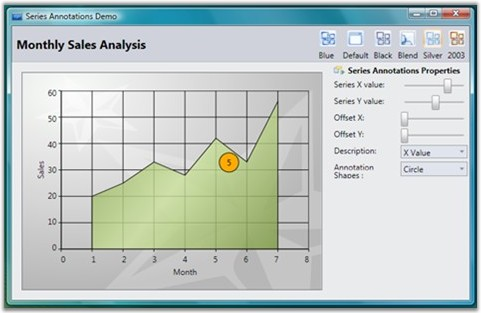

Predefined shapes for annotation objects are used to point at specific information about a point in the chart series. For example: Circle, Down arrow, and so on. The following table describes more about the annotation shapes:
Table 20: Property Table
|
Name of the Property |
Description |
Values it accepts |
|
AnnotationShape |
Dependency Property |
Enum of type AnnotationShapes |
|
Fill |
Dependency Property |
Colors from Brushes |
 Note: The AnnotationShape property helps create
the required shape for the annotation and the Fill property helps fill the shape
selected with required color.
Note: The AnnotationShape property helps create
the required shape for the annotation and the Fill property helps fill the shape
selected with required color.
The following code example illustrates creation of a circle with orange fill at points 5 on X series and point 45 on Y series in a Chart.
|
[XAML]
<syncfusion:ChartSeries DataSource="{Binding Source={StaticResource myXmlData}, XPath=Products/Product}" BindingPathX="Month" BindingPathsY="Sales" IsIndexed="False" Name="series1" Label="Series1" Type="Area" Interior="{StaticResource SeriesAInterior}"> <syncfusion:ChartSeries.Annotations> <syncfusion:AnnotationsCollection > <syncfusion:ChartSeriesAnnotation x:Name="serAnnot" X="5" Y="45" OffsetX="0" OffsetY="0" AnnotationShape="Circle" Fill="Orange" Stroke="Black" /> </syncfusion:AnnotationsCollection> </syncfusion:ChartSeries.Annotations> </syncfusion:ChartSeries> |
|
[C#]
Chart1.Areas[0].Series[0].Annotations.Items[0].AnnotationShape = AnnotationShapes.Circle; Chart1.Areas[0].Series[0].Annotations.Items[0].X = 5;
Chart1.Areas[0].Series[0].Annotations.Items[0].Y = 45; Chart1.Areas[0].Series[0].Annotations.Items[0].OffsetX = 0; Chart1.Areas[0].Series[0].Annotations.Items[0].OffsetY = 0; Chart1.Areas[0].Series[0].Annotations.Items[0].Fill = Brushes.Orange; Chart1.Areas[0].Series[0].Annotations.Items[0].Stroke = Brushes.Black; |
Run the sample. The following output is provided.

Figure 108: Annotation Points